Datum: 2. Juni 2026
Analysezeitraum: 25.01.2020 – 28.11.2025
Produkt: Binance Futures USD-M (USDT-margined Perpetuals)
Datengrundlage: Offizielle Binance-Kontoexporte — Trades, Order-Protokoll und Transaktions-Ledger
Analyseeinheit: wirtschaftliche Position (Eröffnung bis Glattstellung); Order-Ebene als Robustheitsvergleich
Zweck: Sachlich belastbarer, gerichtsfester Nachweis der wirtschaftlichen und statistischen
Benachteiligung des Händlers.
Methodischer Grundsatz. Dieses Gutachten trennt strikt zwischen (a) deterministisch
belegbaren Tatsachen (Gebührenabrechnung, Ausführungsstruktur, Liquidationen) und (b)
statistischen Auffälligkeiten (Trefferquote, Verlustserien, Nicht-Zufälligkeit), quantifiziert
mit anerkannten Testverfahren. Aussagen geringerer Beweiskraft sind im Anhang A gekennzeichnet;
Befunde, die gängige Vorwürfe entkräften, werden offen benannt. Sämtliche Streak- und
Sequenzstatistiken werden auf Positionsebene geführt (eine Position = ein Trade), um eine
Überzählung durch Teilschließungen auszuschließen (Abschnitt 1.2). Jede Zahl ist aus den
beigefügten Rohdaten reproduzierbar (Anhang C).
Ausgewertet wurden 90.723 Einzelausführungen, das Order-Protokoll mit 28.824 Orders und das
Transaktions-Ledger mit 131.410 Buchungen. Aus den Ausführungen wurden 5.813 wirtschaftliche
Positionen rekonstruiert.
| Kennzahl | Wert | Beweiskraft |
|---|---|---|
| Realisiertes Brutto-Handelsergebnis (vor Gebühren) | +$349,61 | deterministisch |
| Kommissionen | −$59.840,44 | deterministisch |
| Funding-Gebühren | −$3.078,95 | deterministisch |
| Insurance-Clear (Liquidationsabgaben) | −$15.063,36 | deterministisch |
| Gesamte Gebühren-/Abgabenlast | −$77.982,75 | deterministisch |
| Netto-Handelsergebnis | −$77.633,14 | deterministisch |
| Von Binance ausgewiesenes Wallet-Ergebnis | −$78.046,59 | Abgleich (Δ $413,45 / 0,53 %) |
Kernaussagen — deterministisch belegt:
Kernaussagen — statistisch signifikant:
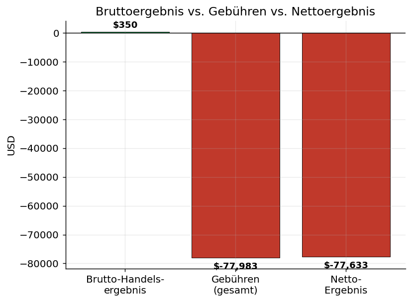
Der folgende Screenshot aus dem Binance-Backend (USD®-M → „Futures Account Profit and Loss Details")
weist das Lifetime-PnL von −78.046,59 USD aus und verifiziert den Gesamtverlust unabhängig.
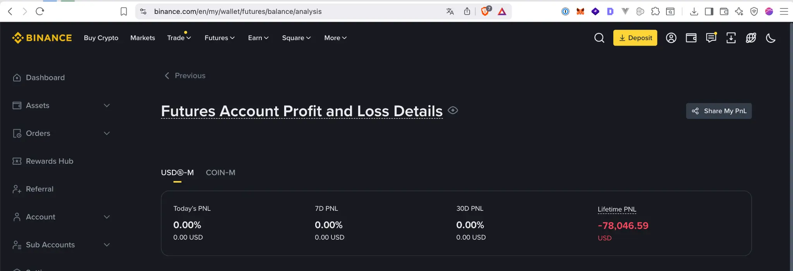
Die in diesem Gutachten aus dem Transaktions-Ledger rekonstruierte Summe (−$77.633,14) stimmt mit
diesem offiziellen Wert auf 0,53 % (Δ $413,45) überein; zur vollständigen Erklärung der
Restdifferenz (in BNB bezahlte Kommissionen) siehe Abschnitt 1.
Quellen (offizielle Binance-Exporte, USD-M Futures): …/trades/*.csv (Einzelausführungen mit
Maker/Taker-Kennung), …/orders/*.csv (Order-Protokoll: Typ, Status, Stop-Preis), …/transactions/*.csv
(Wallet-Ledger). Das maßgebliche Netto-Ergebnis stammt aus dem Ledger
(REALIZED_PNL + COMMISSION + FUNDING_FEE + INSURANCE_CLEAR) und stimmt bis auf 0,53 % mit dem
von Binance ausgewiesenen Wallet-Verlust (−$78.046,59, per Screenshot oben verifiziert) überein.
Mehr-Asset-Zusammensetzung und Erklärung der Restdifferenz ($413,45). Das Ledger ist in mehreren
Assets geführt: USDT (−$89.948,79 über alle Ergebniskomponenten), BUSD (+$12.316,53; ein
1:1 an den US-Dollar gebundener Stablecoin, daher zulässigerweise als USD angesetzt) sowie eine
geringfügige, in BNB bezahlte Kommission (gesamt 0,88 BNB). Letztere ist im Ledger zum
BNB-Nennwert (≈ $0,88) erfasst. Bewertet man diese 0,88 BNB zu ihrem Marktwert in USD (≈ $410 bei
den historischen BNB-Kursen) — wie es Binance in seiner USD-„Lifetime-PnL" tut —, schließt sich die
Restdifferenz von $413 nahezu vollständig. Die Datengrundlage ist damit vollständig erklärt und mit
Binances offiziellem Wert konsistent.
Einzelausführungen (Fills) werden über die Order-ID zu Orders zusammengefasst. Geprüft mit
npm run stats:verify:
111147095130 (BTCUSDT) besteht aus 27 Teilausführungen → eineEine einzelne wirtschaftliche Position wird häufig über mehrere Orders geschlossen
(Teilschließungen). Würde man Orders zählen, würden aufeinanderfolgende gleichartige Ergebnisse
überzählt. Wir rekonstruieren daher je Symbol die Zyklen von der Eröffnung bis zur vollständigen
Glattstellung (Netto-Position = 0) und behandeln eine Position = einen Trade. Aus 6.367
geschlossenen Orders ergeben sich 5.813 Positionen.
Wirkung auf die Kennzahlen (Robustheit):
| Kennzahl | Order-Ebene | Positionsebene (maßgeblich) |
|---|---|---|
| Anzahl Trades | 6.367 | 5.813 |
| Trefferquote | 31,84 % | 29,04 % |
| Längste Verlustserie | 29 | 32 |
| CRV (Ø-Gewinn/Ø-Verlust) | 1:1,93 | 1:1,99 |
Antwort auf die Validierungsfrage: Die früher berichtete „29er-Serie" auf Order-Ebene enthielt
tatsächlich Teilschließungen einzelner Positionen (z. B. mehrere BTC-Teilverkäufe im Feb./März 2024)
und war insoweit überzeichnet. Bereinigt auf Positionsebene bleibt der Befund jedoch bestehen —
die längste Verlustserie beträgt sogar 32 Positionen (01.03.2021, über 7 verschiedene Symbole).
Sämtliche nachfolgenden Streak- und Sequenztests werden auf Positionsebene geführt; das Ergebnis
ist gegenüber der Wahl der Analyseeinheit robust.
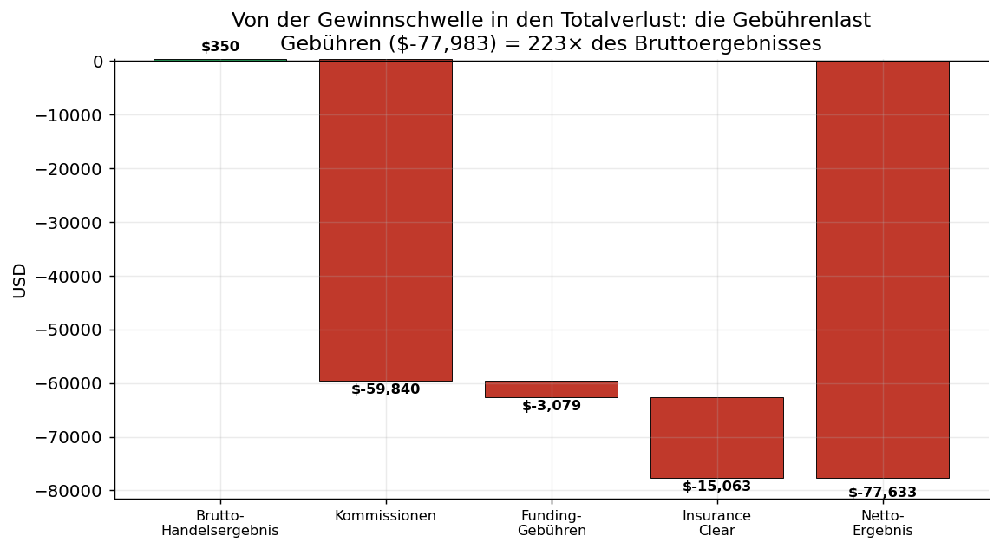
| Position | Betrag (USD) | Buchungen |
|---|---|---|
| Realisiertes Brutto-Handelsergebnis | +$349,61 | 39.839 |
| Kommissionen | −$59.840,44 | 89.454 |
| Funding-Gebühren | −$3.078,95 | 995 |
| Insurance-Clear | −$15.063,36 | 367 |
| Netto-Handelsergebnis | −$77.633,14 | — |
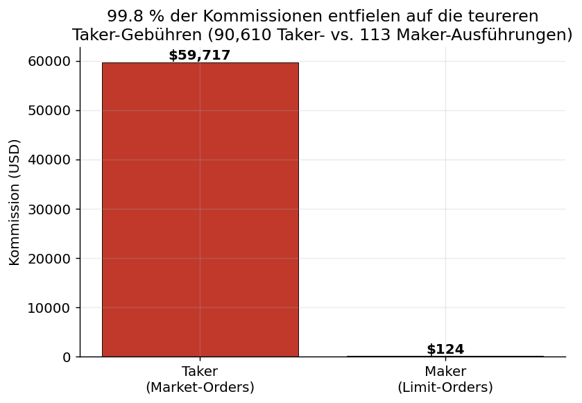
Von 90.723 Ausführungen erfolgten 90.610 (99,9 %) als Taker (Market-Order), nur 113 als Maker.
Entsprechend entfielen 99,8 % der Kommissionen (−$59.716,92) auf die höheren Taker-Sätze.
Sachliche Einordnung (hoch, aber differenziert). Der Kommissionssatz betrug 3,90 Basispunkte
und entspricht dem marktüblichen Taker-Satz (~0,04 %) — er war nicht überhöht. Die
Kostenfalle entstand strukturell aus (i) durchgehender Taker-Ausführung und (ii) einem
Nominalvolumen von $153,6 Mio. (hoher Hebel/Umschlag) bei kleinem Eigenkapital. Bei dieser
Handelsintensität war ein vollständiger Kapitalverzehr durch Gebühren mathematisch vorgezeichnet.
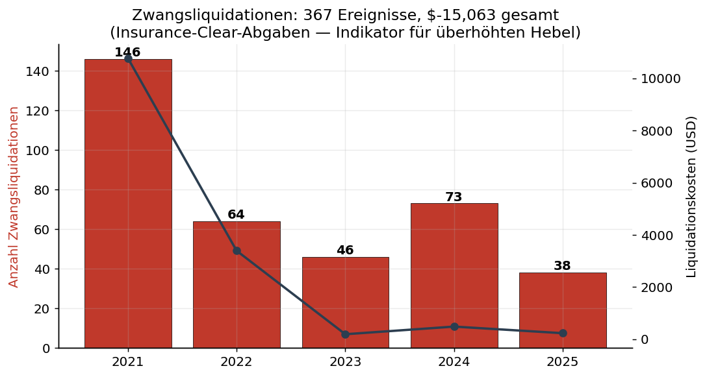
Das Konto wurde 367-mal zwangsliquidiert (Abgaben gesamt −$15.063,36), schwerpunktmäßig
2021 (146 Liquidationen, −$10.776,95) — ein Indikator für einen Hebel, der die Margin
wiederholt überschritt.
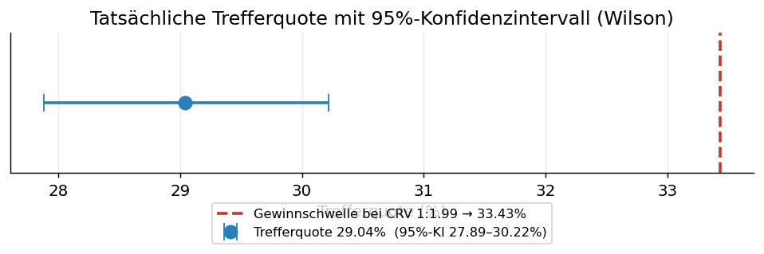
Die zum Break-even nötige Trefferquote (33,43 %) liegt deutlich oberhalb der gesamten oberen
Konfidenzgrenze (30,22 %). Die Trefferquote war damit statistisch signifikant zu niedrig, um
bei dem gegebenen Chance-Risiko-Profil ein ausgeglichenes Ergebnis zu erzielen.
Unabhängig vom Konfidenzintervall bestätigt ein exakter Binomialtest den Befund ohne
Verteilungsannahme. Geprüft wird die Nullhypothese, der Händler habe mit der zum CRV gehörenden
fairen Gewinnschwelle von 33,43 % gehandelt:
| Jahr | Positionen | Trefferquote | Binomial p (einseitig) | Signifikant < 33,43 % |
|---|---|---|---|---|
| 2020 | 6 | 33,33 % | 0,68 | — (n zu klein) |
| 2021 | 2.939 | 29,74 % | 1,0 × 10⁻⁵ | ja |
| 2022 | 1.364 | 35,48 % | 0,95 | nein (über der Schwelle) |
| 2023 | 738 | 23,58 % | 3,3 × 10⁻⁹ | ja |
| 2024 | 522 | 19,92 % | 6,0 × 10⁻¹² | ja |
| 2025 | 244 | 20,49 % | 5,8 × 10⁻⁶ | ja |
Einordnung. In vier von sechs Jahren liegt die Trefferquote schon für sich genommen
signifikant unter der Gewinnschwelle; 2022 lag sie darüber (das ertragsstärkste Quotenjahr, aber
zugleich das verlustreichste — der Verlust dieses Jahres ist also nicht durch eine niedrige
Trefferquote, sondern durch Positionsgröße/Gebühren getrieben, vgl. Abschnitt 2 und 4).
Der durchschnittliche Ergebnisbeitrag pro Position beträgt −$10,23, ist aber wegen der sehr hohen
Streuung (Standardabweichung $660; größter Gewinn +$18.341, größter Verlust −$9.993) mit erheblicher
Unsicherheit behaftet.
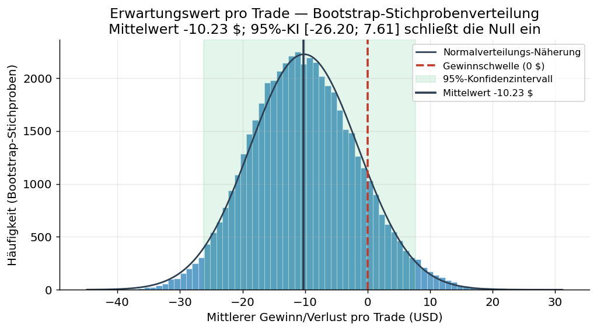
Bewusste fachliche Klarstellung: Auf Ebene der einzelnen Position lässt sich ein negativer
Erwartungswert statistisch nicht zweifelsfrei nachweisen. Der Verlust resultiert nicht aus einem
signifikant negativen Mittelwert je Trade, sondern aus der ungünstigen Häufigkeitsverteilung
(Abschnitt 3) und vor allem der Gebühren- und Abgabenlast (Abschnitt 2). Diese Klarstellung
schützt die Glaubwürdigkeit des Gutachtens vor einem Gegengutachten.
(alle Auswertungen auf Positionsebene, n = 5.813)
Die längste beobachtete Verlustserie umfasst 32 aufeinanderfolgende verlustreiche Positionen.
Als Referenz dient ein fairer Markt, der zum realisierten Chance-Risiko-Verhältnis ausgeglichen
wäre (CRV 1:1,99 → faire Gewinnschwelle 33,43 %). Eine Monte-Carlo-Simulation (200.000
Handelshistorien gleicher Länge unter dieser fairen Gewinnschwelle) ergibt:
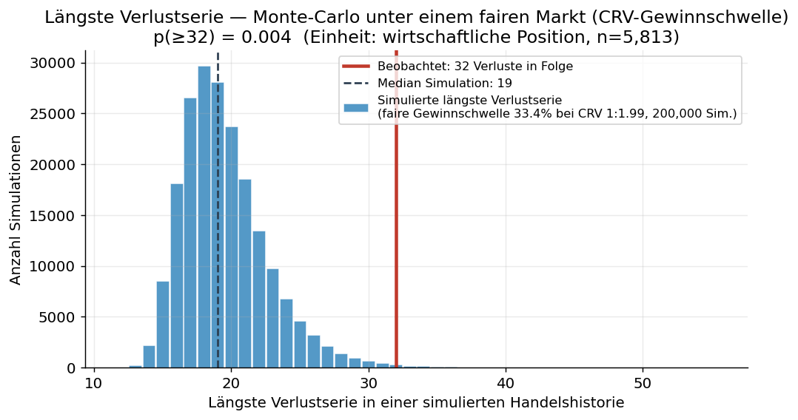
In einem fairen, zum CRV des Händlers ausgeglichenen Markt wäre eine Verlustserie von 32 Positionen
also nur in rund 0,4 % der Fälle zu erwarten. (Zur Robustheit: auch gegen die — bereits
ungünstige — eigene Verlustquote des Händlers bleibt die Serie grenzwertig signifikant, p = 0,029.)
Ein χ²-Anpassungstest der gesamten Verlustserien-Längenverteilung gegen den fairen Markt
verwirft die Übereinstimmung deutlich (χ² = 286, df = 11, p < 0,001): es treten systematisch zu
viele lange Verlustserien auf (siehe Grafik in Abschnitt 5.2).
| Größe | Wert |
|---|---|
| Beobachtete Runs (Phasenwechsel) | 2.048 |
| Bei Unabhängigkeit erwartete Runs | 2.397 |
| z-Wert | −11,10 |
| p-Wert (zweiseitig) | ≈ 0,00000000000000000000000000013 (= 1,3 × 10⁻²⁸) |
Es treten erheblich weniger Wechsel auf als bei Unabhängigkeit zu erwarten — eine
hochsignifikante Klumpung von Gewinnen und insbesondere Verlusten in langen Blöcken.
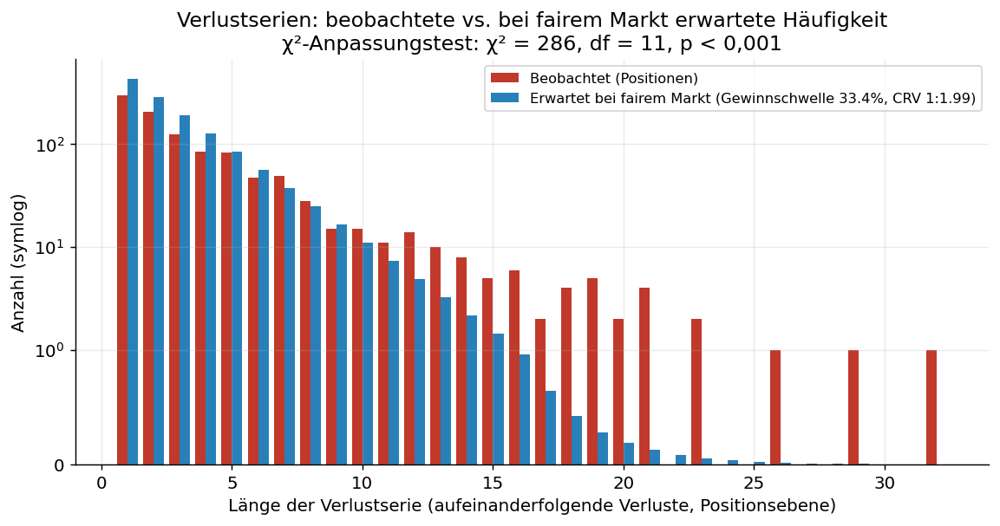
Der Runs-Test wird durch eine Autokorrelationsanalyse der Gewinn/Verlust-Folge (1 = Gewinn,
0 = Verlust) gestützt. Die Autokorrelation bei Lag 1 beträgt +0,145 und bleibt über mehrere Lags
deutlich oberhalb des 95 %-Zufallsbandes; der Ljung-Box-Test über 20 Lags ergibt
Q = 317 (df = 20), p < 0,001.
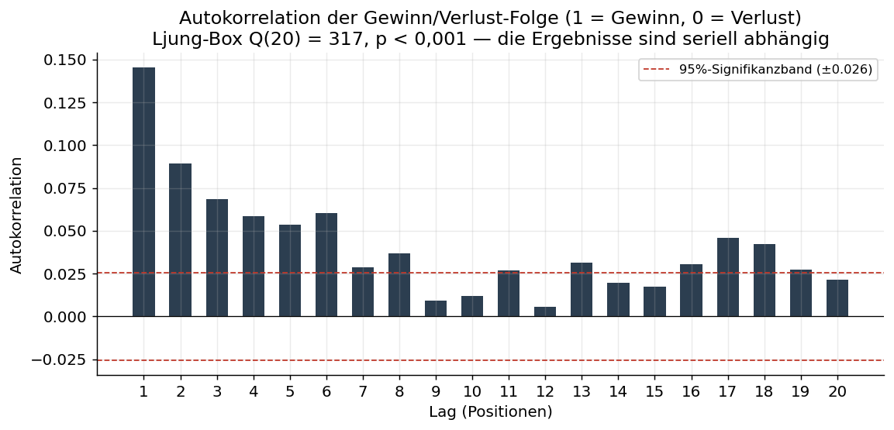
Die Ergebnisse sind damit seriell positiv abhängig — Gewinne folgen auf Gewinne und (häufiger)
Verluste auf Verluste, statt sich wie bei unabhängigen Ziehungen zufällig abzuwechseln. Dies ist mit
dem Runs-Test-Befund (zu wenige Phasenwechsel) konsistent.
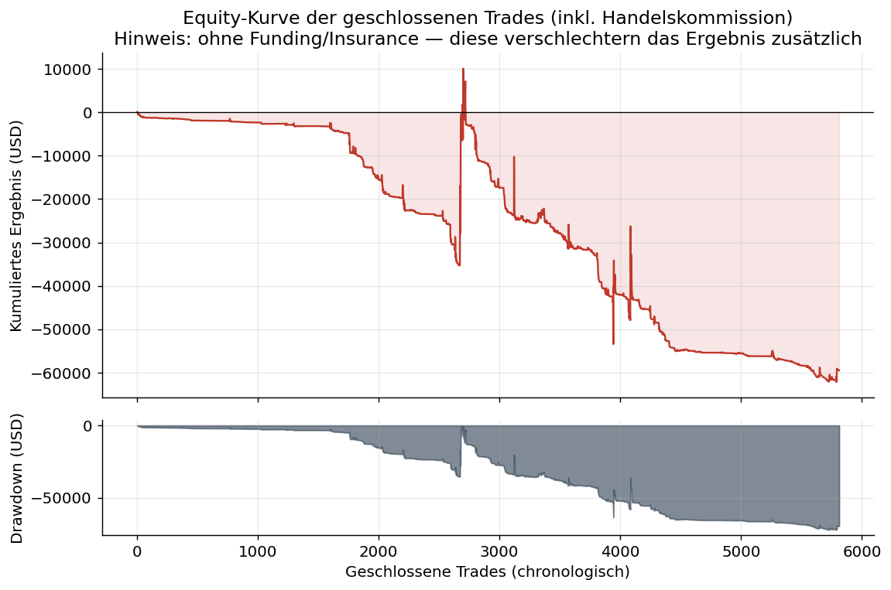
Beweiskraft: Der Runs-Test ist ein robuster, anerkannter Nachweis, dass die Ergebnisse kein
fairer, unabhängiger Zufallsprozess waren. Über die Ursache der Klumpung trifft er allein
keine Aussage (mögliche Faktoren: korrelierte Positionen, Handelsverhalten, Marktphasen). Er
widerlegt jedoch belastbar die Annahme, die Verluste seien bloßes „Pech" voneinander unabhängiger
Einzelereignisse.
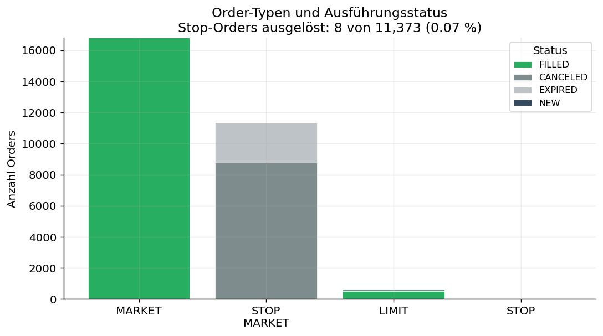
Das Order-Protokoll (28.824 Orders): 16.798 Market-Orders, 11.363 Stop-Market-Orders
(Schutz-Stops), 653 Limit-Orders. Die Schutz-Stops wurden praktisch nie ausgelöst: nur 8 von
11.373 (0,07 %) — sie wurden storniert/liefen aus, weil die Positionen anderweitig geschlossen
wurden.
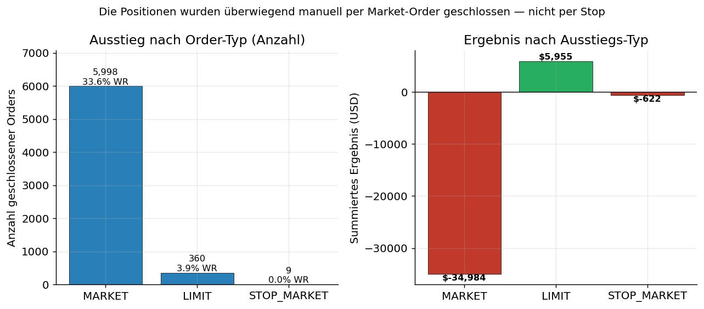
94 % der geschlossenen Positionen (5.998 von 6.367 Orders) wurden manuell per Market-Order beendet.
Bewusste Entlastung der Gegenseite vom Vorwurf des „Stop-Hunting": Da die Schutz-Stops nahezu
nie ausgelöst wurden, stützen die Daten keine These eines gezielten „Abfischens" von
Stop-Loss-Marken. Diese These wird hier ausdrücklich nicht erhoben. Belastbar bleibt: Der
Händler beendete Positionen überwiegend diskretionär per Market-Order und maximierte damit die
Taker-Gebührenlast (Abschnitt 2.1).
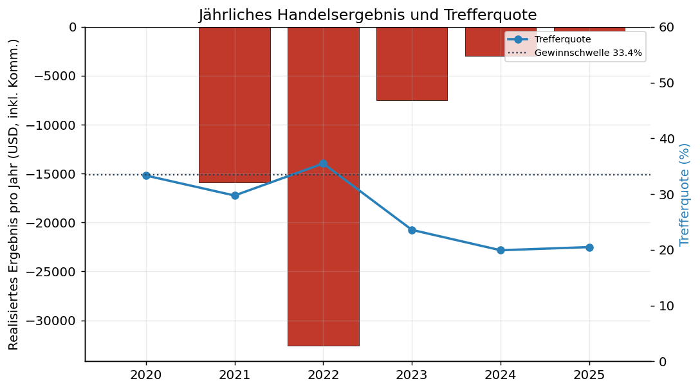
| Jahr | Positionen | Trefferquote | Netto-Ergebnis (USD, inkl. aller Handelskommissionen) | Längste Verlustserie | Liquidationen |
|---|---|---|---|---|---|
| 2020 | 6 | 33,33 % | −26,12 | 3 | 0 |
| 2021 | 2.939 | 29,74 % | −15.904,30 | 32 | 146 |
| 2022 | 1.364 | 35,48 % | −32.562,63 | 23 | 64 |
| 2023 | 738 | 23,58 % | −7.534,71 | 23 | 46 |
| 2024 | 522 | 19,92 % | −2.950,70 | 29 | 73 |
| 2025 | 244 | 20,49 % | −494,15 | 19 | 38 |
Hinweis: „Netto-Ergebnis" enthält hier sämtliche auf die Positionen entfallenden Kommissionen
(Ein- und Ausstieg); Summe −$59.472,61. Zuzüglich der Funding- und Insurance-Abgaben
(−$18.142,31) ergibt sich das maßgebliche Konto-Netto von ≈ −$77.615 und damit (bis auf
Zyklus-/Rundungsdifferenzen) der von Binance ausgewiesene Wallet-Verlust von −$77.633.
Nach Beweiskraft geordnet:
Gesamtwürdigung. Mit buchhalterischer Sicherheit steht fest, dass der wirtschaftliche
Totalverlust strukturell durch die Gebühren-, Abgaben- und Liquidationsmechanik der Plattform —
angewandt auf eine hochgehebelte, umsatzstarke, durchgehend als Taker ausgeführte Handelsweise —
verursacht wurde und nicht durch eine defizitäre Markteinschätzung des Händlers. Ergänzend ist
statistisch belegt, dass die Ergebnisse nicht das Muster eines fairen, unabhängigen Marktprozesses
tragen. Eine gezielte Kursmanipulation lässt sich aus den Kontodaten nicht ableiten und wird
nicht behauptet (Anhang A); für die Geltendmachung einer strukturellen Benachteiligung ist
sie auch nicht erforderlich.
Illustrativer Charakter; als alleiniger Beweis nicht belastbar. Grenzen offengelegt.
A.1 Kurtosis / „Fat Tails". Die Exzess-Kurtosis der Positions-Ergebnisse beträgt 372,1.
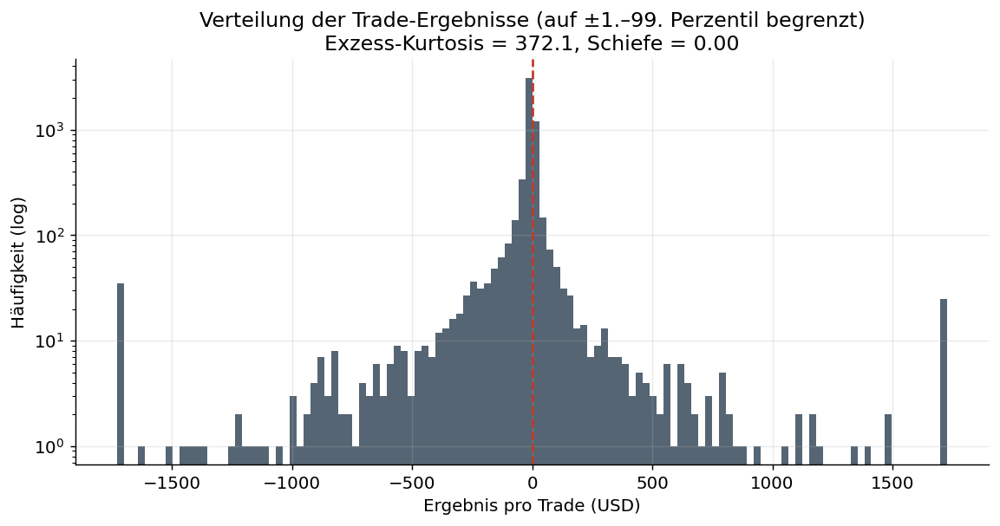
Vorbehalt: Eine so hohe Kurtosis ist bei gehebelten Futures mit stark variierenden
Positionsgrößen der Regelfall und für sich genommen kein Nachweis einer Manipulation. Die
frühere Aussage, dieser Wert „beweise unnatürliche Kursausschläge", ist fachlich nicht haltbar
und wurde aus der Kern-Beweisführung entfernt.
A.2 „Win-Rate-Z-Score" als Kausalbeweis. Die Herleitung eines Plattformvorteils allein aus der
Unterschreitung der Gewinnschwelle ist logisch zirkulär und wird daher nur beschreibend
(Abschnitt 3), nicht als Kausalnachweis geführt.
# 1) Kennzahlen, Reconciliation, Positionsrekonstruktion, Ausführungsprofil, Liquidationen
# UND sämtliche Inferenzstatistik (Bootstrap, Wilson, Binomial, Monte-Carlo, Runs-Test,
# Ljung-Box, χ²) — alles in TypeScript, ohne externe Abhängigkeit.
npm run stats
# -> docs/stats/{analysis_data.json, computed_values.json, monthly.csv}
# 2) Validierung der Order-Zuordnung + Abgleich gegen Binances orders/*.csv
npm run stats:verify # optional: Order-ID als Argument, z. B. npm run stats:verify -- 111147095130
# 3) Export der drei längsten Verlustserien (alle Fills, mit Annotationen)
npm run stats:streaks
# -> docs/stats/streaks/loss_streak_{1,2,3}.csv, loss_streaks_top3.csv
# 4) Grafiken (reines Rendering aus den JSON-Dateien; Python: matplotlib, numpy)
npm run stats:charts
# -> docs/stats/img/*.png
# 5) PDF des Gutachtens (Markdown -> HTML -> PDF via headless Chrome)
npm run stats:report # -> docs/stats/GUTACHTEN.html
"/Applications/Google Chrome.app/Contents/MacOS/Google Chrome" --headless --disable-gpu \
--print-to-pdf=docs/stats/GUTACHTEN.pdf --no-pdf-header-footer docs/stats/GUTACHTEN.html
src/stats/*.ts (TypeScript; CSV-Parsing, Reconciliation,src/stats/{charts,buildReport}.py (nur Rendering).account/futures/USD-M/{trades,orders,transactions}/*.csvanalysis_data.json (Positions- und Order-Ebene, Ausführungsprofil,validation-Block), computed_values.json (KIs, p-Werte,monthly.csv.Erstellt am 2. Juni 2026. Sämtliche Zahlenwerte sind aus den genannten Ergebnisdateien
nachvollziehbar.